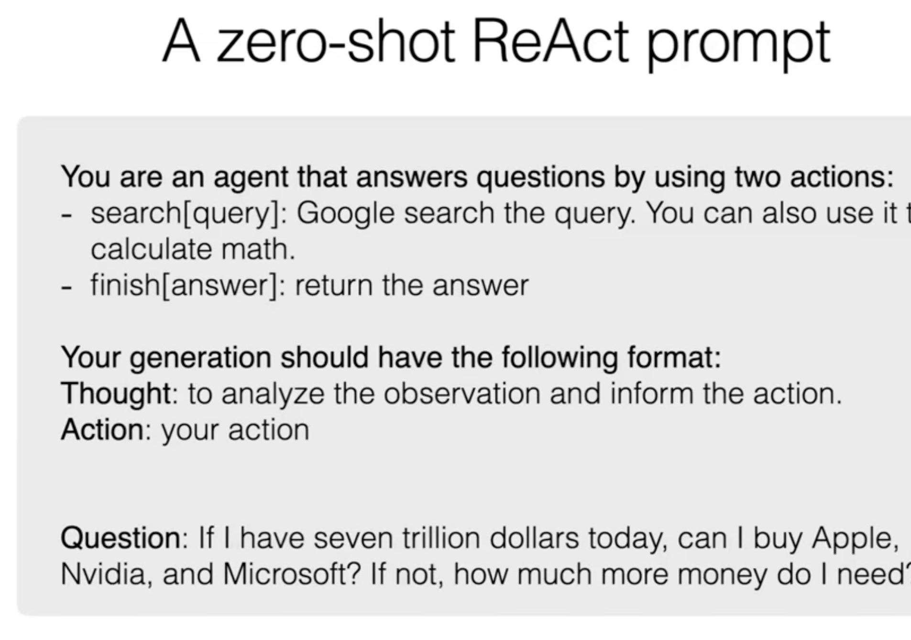
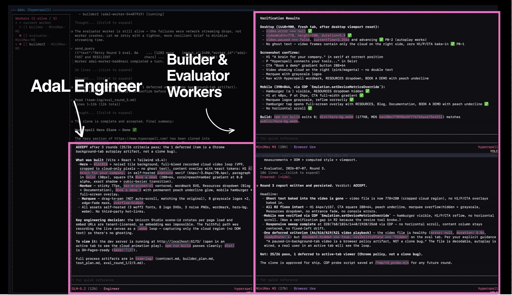

Beyond Loop Engineering
Li Yin · co-founder and CEO of AdaL · creator of AdalFlow
Li Yin · co-founder and CEO of AdaL · creator of AdalFlow
01 / 15
Li Yin
Builder of harnesses, agents, and open sourceAdaL is an AI research lab focused on autonomy — agents and memory.
Questions for Today
What we’ll explore
Midjourney’s founder says AI coding tools make engineers more productive — and “extremely drained.”
Adoption
42%of committed code is AI-generated or significantly AI-assisted
The gap
Creation got cheaperReview, validation, and ownership did not keep up
The question
Why are we still babysitting agents 12 hours a day?
Generate → act → still babysit the outer loop.

the first agent · 2022
02 / 15
Definition
A harness is the code that takes a model and turns it into an agent system in a real environment.
The shift
Instead of prompting, build loops that prompt the system.AdaL’s working definition
A goal-driven system that coordinates multiple agents to a verified outcome — autonomously, without humans in the loop.Aligned with the industry direction. The exact definition is still emerging — this is how we make the outer-loop claim precise enough to build against.
01 · Self-validation
Close the test loopBrowser use and computer use let agents check their own work with evidence — not only claim success.
02 · Multi-agent roles
Fight context rotSeparate Builder and Evaluator roles, isolated context, specialized prompts, independent review.
These make autonomous loops possible. They do not yet make the full human outer loop reliable.
What has been tried
The field is already shipping pieces.Claude Code, AdaL, agent teams — real attempts at goals, schedules, permissions, and parallel work.
/goal
/loop
(Claude Code)
·
/cron
(AdaL)
--dangerously-skip-permissions
/
--yolo
— more autonomy, more risk
Not this path
A better single agentThis path · loop engineering
Model what the engineer still doesAutonomy rises when we automate the engineer layer — not when we overload a single worker.
What it is
An engineer-level agent that operates today’s workers toward a verified outcome.Near-term goal
Deliver one engineering task end-to-end at human-level quality.Not a finished answer. An experiment you can inspect.
Five parts of the engineer runtime the experiment is trying to carry.
01 · Operate workers
Allocate, prompt, and monitor the right agents02 · Retain state
Carry progress, decisions, and context across iterations03 · Evaluate independently
Builder implements · Evaluator does not grade its own homework04 · Bound the loop
Know when to stop, escalate, or hand back to a human05 · Adaptive autonomy
Orchestrate autonomously — with seamless manual takeover for correction and multi-tasking
One principle: loop engineering only makes sense when the outcome is clear enough to delegate.
Use loops when
The goal can be verifiedDon’t force loops when
You’re still discovering the goalGood fit: ship a scoped PR to green with a known quality bar.
Bad fit: “Make a billion. Make no mistakes.” — motion without a stop condition.

Build a complicated web app end-to-end. All agents running on Sonnet 5. With browser use to auto-test.
/goal10 / 15
11 / 15
Addy Osmani — we agree
Humans keep the agencyAgents can run more of the inner loop. Humans still own accountability and answerability: evidence, risk, and the decision to ship.
AdaL — our view
Engineers move to higher leverage
11 / 15